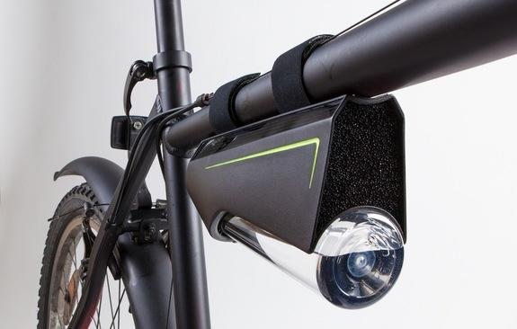

Self-Filling Water Bottle Converts Humid Air into Drinkable H2O
When water is scarce, why not pull it out of thin air? An industrial designer in Austria is hoping to do just that (well, sort of).
Kristof Retezár, a designer based in Vienna, invented a device that can extract humidity from the air and condense it into drinkable water. The handy gadget, dubbed Fontus, can be attached to a bike so that cyclists can generate water during long-distance rides through the countryside, where pit stops may be few and far between.
Fontus works using the basic principle of condensation, which can be easily demonstrated by taking something out of a refrigerator (for instance, a can of soda) and leaving it on the kitchen counter for a bit. Eventually, you'll notice moisture collecting on the sides of the object. [See video of how the Fontus device works]
"This is simply condensation of the humidity that is contained in the air," Retezár told Live Science. "You always have a certain percentage of humidity in the air, it doesn't matter where you are — even in the desert. That means you would always potentially be able to extract that humidity from the air."
The solar-powered device consists of a condensator (which functions like a cooler) that is connected to a series of hydrophobic surfaces that repel water. As the bike-mounted gadget takes in air, and these surfaces get cold, you're left with condensation, Retezár said.
"Because they're hydrophobic, they immediately repel the condensed water that they created, so you get a drop flow [into the bottle]," he explained. "Basically, you're taking air in a vapor state and converting it into a liquid state."
Fontus can produce 0.5 quarts (0.5 liters) of water in 1 hour in what is considered "really good" conditions, with temperatures between 86 degrees and 104 degrees Fahrenheit (30 to 40 degrees Celsius) and between 80 percent and 90 percent humidity, Retezár said.
The prototype includes a filter at the top to keep dust and bugs out of the water, but currently it does not include a way to filter out potentially harmful contaminants. [Check out the best reusable water bottles at our sister site Active Junky]
"The water you get is clean, unless the air is really contaminated," Retezár said. "We're thinking about making a bottle that also has a carbon filter, and this one would be for cities or areas where you might think the air is contaminated. But originally, this water bottle was thought to be used in nature, and places where you wouldn't have contaminated air."
Retezár is also working on a stand-alone version that uses an inverted ventilator to suck air into the system (rather than relying on the airstream created from a moving bike). This next-generation version could be used in regions of the world where humidity is high, but water is scarce.
"The idea was to solve a global problem: water issues in areas of the world where there is very little groundwater but very high humidity," Retezár said. "My intent was to invent a machine or device that would be able to filter the humidity in the air and turn it into drinkable water."
The initial Fontus design was shortlisted for the 2014 James Dyson Award, which helped Retezár gain exposure for the project, he said. Since then, he has received funding from the Austrian government that will help cover the technical development phase. The designer is also aiming to launch a crowdfunding campaign in March to cover the cost of mass-producing the devices. Retezár said he is aiming to keep the retail price for the Fontus under $100, and if all goes according to plan, the self-filling bottles could be commercially available in about nine or 10 months.